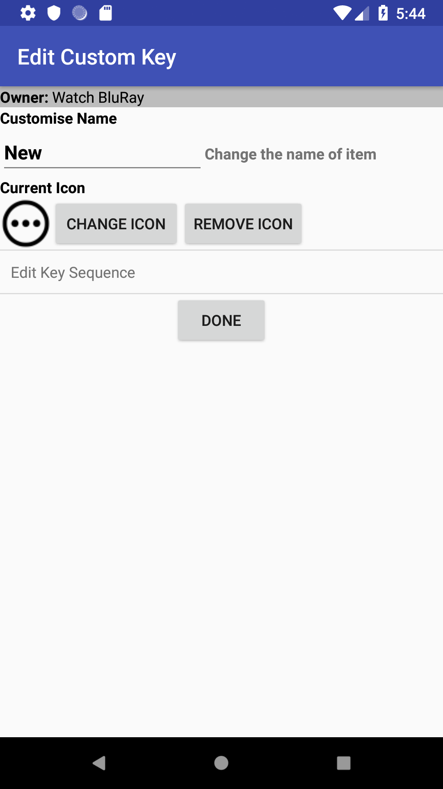

    <div class="container content">
      {% assign prev_page = "Activity Remotes" %}
      {% assign prev_href = "activityremote.html" %}
      {% assign next_page = "Change Icons" %}
      {% assign next_href = "changeicon.html" %}
      {% include usergnav.html %}

      <div class="row">
        <div class="col-lg-7">
          <h2 class="page-title">Edit Custom Key</h2>
          <p>Here you can:</p>
          <ul id="bullets">
            <li>Change the name of the Key,</li>
            <li><a href="changeicon.html">Change</a> or remove the icon that should be displayed, and</li>
            <li>Change the <a href="keyseq.html">Key Sequence</a> for this Key.</li>
          </ul>
          <p>Once you have completed your modifications, press the <i>Done</i> button.</p>
          <p>Pushing the <i>Back</i> button at any time will cancel the operation.</p>
        </div>
        <div class="col-lg-5">
          <div class="row spacer2 d-none d-lg-block"></div>
          <p class="aligncenter"></p>
        </div>
      </div>
      {% include usergnav.html %}
    </div>
